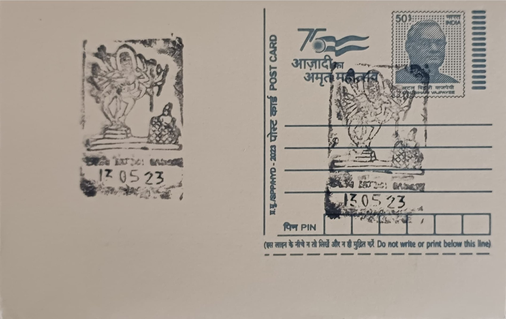

Lord Nataraja
ನಟರಾಜ


The term Nataraja, from the Sanskrit "nata" (dance or actor) and "raja" (king or lord), names Shiva in his aspect as Lord of the Dance, an iconographic conception that crystallized in the Deccan and in Tamil lands between the fifth and seventh centuries CE. Textual roots trace to the Natya Sastra, the classical Sanskrit treatise on dramatic and dance theory attributed to the sage Bharata, which codified the symbolic vocabulary of gesture and pose that sculptors would later translate into stone. The myth underlying the image holds that Shiva's tandava is performed in a forest of sages at Chidambaram, subduing their pride and the demon Apasmara, a narrative later elaborated extensively in Chola-period temple literature of Tamil Nadu, though the visual type itself took shape earlier and further north, in the rock-cut sanctuaries of Badami.
As an iconographic subject, Nataraja occupies a central place in Shaiva art, representing Shiva not merely as an ascetic deity but as the animating force of cosmic rhythm, whose dance enacts the unending cycle of creation, preservation, and dissolution. The form carries deep philosophical weight in Hindu metaphysics, read by commentators as a visual statement on the nature of time, matter, and consciousness. Within Badami specifically, the Nataraja relief carved in Cave 1 is regarded by art historians as among the earliest surviving monumental illustrations of the dancing Shiva conceived in accordance with Natya Sastra conventions, predating by centuries the bronze Nataraja images for which the Chola dynasty of Tamil Nadu later became renowned, and giving Bagalkote district's Chalukyan sites a foundational position in the iconography's development.
The Badami relief, carved directly into the sandstone wall beside the entrance of Cave 1, was executed under the early Chalukyas of Badami in the mid-sixth century CE, during the reign associated with the dynasty's consolidation of Vatapi (ancient Badami) as a capital and centre of temple-building. The figure stands roughly five feet tall and is distinguished by eighteen arms arranged in a deliberately geometric configuration; the Swiss art historian and Indologist Alice Boner analysed this arrangement as a structured division of positions symbolizing a cosmic wheel of time rather than a random multiplication of limbs. Most of the arms display mudras, symbolic hand gestures drawn from classical dance vocabulary, while others grasp attributes including a small drum, a trident, and an axe, with serpents coiled around several of the limbs, and Shiva is shown wearing a tall cylindrical jatamukuta headdress.
A distinguishing feature of the Badami panel is its narrative framing within the family group: Shiva's son Ganesha and his bull mount Nandi are depicted at his side, situating the cosmic dance within a familiar devotional and domestic register rather than isolating the figure as pure abstraction. Scholars have also noted that the eighty-one dance postures discernible across the full programme of Chalukyan sculpture at Badami and the neighbouring sites of Aihole and Pattadakal correspond closely to the karanas described in the Natya Sastra, suggesting that sculptors worked in direct dialogue with contemporary performance treatises rather than inventing the poses independently. This close correspondence between textual dance theory and carved image is one reason the Badami Nataraja is treated in scholarship as a benchmark for tracing how classical Indian dance and temple sculpture developed in tandem during the early medieval period.
Cave 1 at Badami, in which the Nataraja relief is housed, forms part of the larger Badami Cave Temples complex, a centrally protected monument under the Archaeological Survey of India and a site long proposed for UNESCO World Heritage recognition alongside the neighbouring Chalukyan ensembles of Aihole and Pattadakal. The complex draws sustained scholarly attention and tourist footfall, with the Nataraja panel specifically cited in studies of early Indian dance iconography by researchers including Alice Boner and subsequent historians of Chalukyan art. The relief today remains accessible to visitors climbing to Cave 1 on the sandstone cliff above Agastya Lake, where it is viewed and studied as a surviving link between sixth-century performance theory and the stone-carving traditions that Bagalkote district's temple builders refined over the following centuries.
| Date of Introduction | September 29, 1987 |
|---|---|
| Address | Sub Postmaster, |
| Badami SO, | |
| Bagalkote (dt.), Karnataka - 587201. |